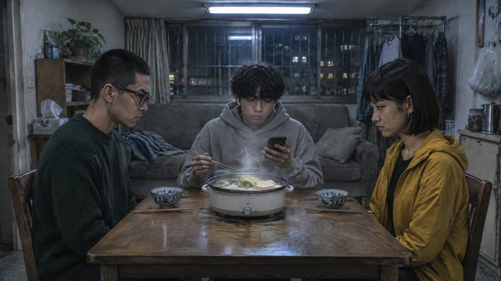
概念怎麼來的
從「用剩餘算力做 showcase」到一支有梗的餐飲提案片，每一步的決定和原因
- 起點
每月剩餘算力做 showcase
依 Angus〈AI Showcase 規劃〉（2026-11-20）：每月用不完的 Higgsfield 點數拿來做範例影片，放上社群吸引客戶。點數每月 29 號歸零，所以生成要在 11-28 前完成。
- 產業
餐飲・火鍋
冬季正是火鍋檔期；熱氣、湯滾、肉片是 AI 拍得最好看的東西。而且「吃到最後會搶」的品類很多，燒肉、炸雞、壽司都能套同一個梗。
- Insight
最後一片，誰都想要
但沒人好意思直接夾。那幾秒的沉默，每個人都經歷過。
- 形式
日常小事拍成西部片
兩人用眼神、手指、筷子對決，配上口哨、吉他 twang 和心聲回音。最後被「旁觀者」反轉：一直低頭滑手機的阿凱，在兩人真的出手那一刻先夾走。
- 賣點
為什麼要去滾一鍋
在家吃鍋肉不夠、要搶；換到店裡，老闆直接端出一座肉山：「肉來啦！免搶啦！」品牌一句話：冷天，就要滾一鍋。肉，不用搶。
- 換場
同一個鏡位繞桌 360°
人不動，攝影機轉到背面時家裡換成店裡。這種超現實運鏡用 Blender 白模先做出來，之後當影片生成的運鏡參考。
連戲規則
內部看分鏡時抓出的問題，整理成之後每一鏡都要守的規則
- 座位固定：阿翔在左、小琪在右、阿凱在後方面向鏡頭，鏡頭這側永遠空著，不會有手從畫面前方伸進來
- 攝影機不越過 A–B 軸線，阿翔永遠在畫面左、小琪在右，過肩鏡也一樣
- 真的出手前，沒有任何手或筷子靠近鍋子
- 先後順序：小琪碰到自己的筷子，阿翔才有反應；兩人撲出去的那一刻，阿凱才先夾走
- 每個方向有自己的背景：阿翔背後是廚房，小琪背後是大門，阿凱背後是窗戶和沙發
- 單人鏡的視線對象要在畫面裡，不然會像在瞪別人
時間腳本
19 鏡、25.5 秒。對決段每鏡只有 0.6 到 2 秒，靠剪接節奏撐緊張感
素材
品牌、角色、場景、站位圖和聲音。全部是生成或本機製作，品牌是虛構的
滾一鍋
下班後揪三五好友吃的台式平價火鍋。肉盤份量大、老闆講話直白有人情味。招牌是沙茶昆布湯底和手切梅花豬。
冷天，就要滾一鍋。肉，不用搶。
- 鍋滾紅
#D7372B - 湯頭白
#FFF6E9 - 炭黑
#1E1A17
虛構品牌，上架前要查商標和現有店名。貼文要標「虛構品牌／AI 生成」。
角色
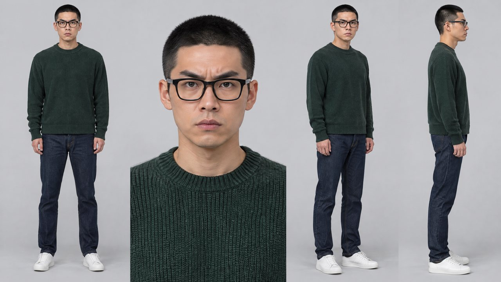
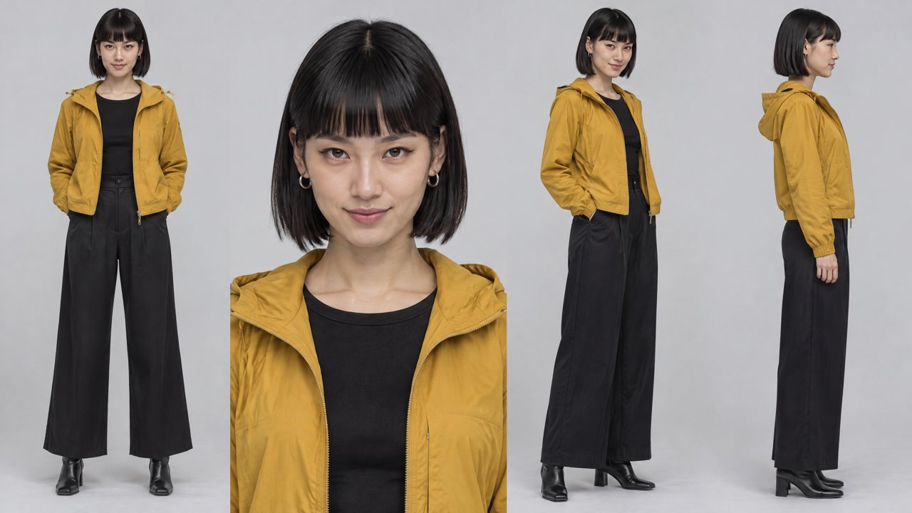
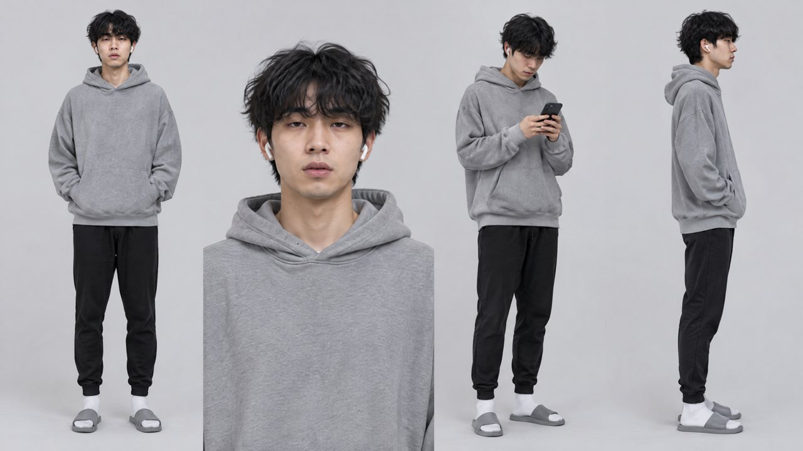
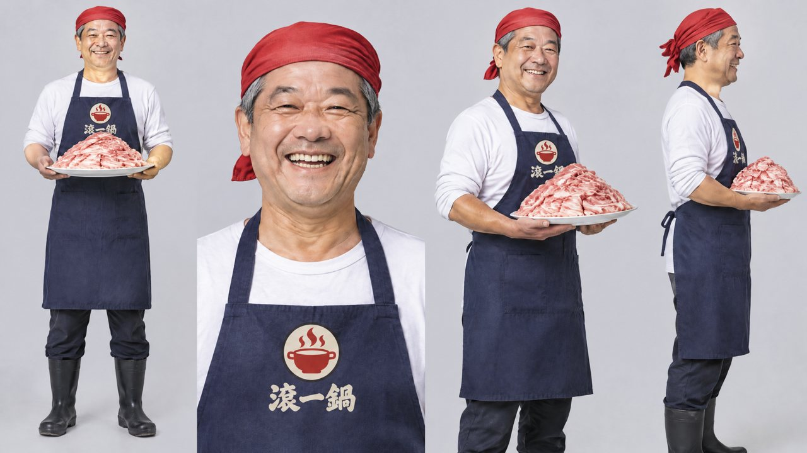
場景與方向背景
同一個房間拍三個方向。之前三個人的背景都是同一扇窗，看起來像坐在同一個位置，所以每個方向各做一張空景
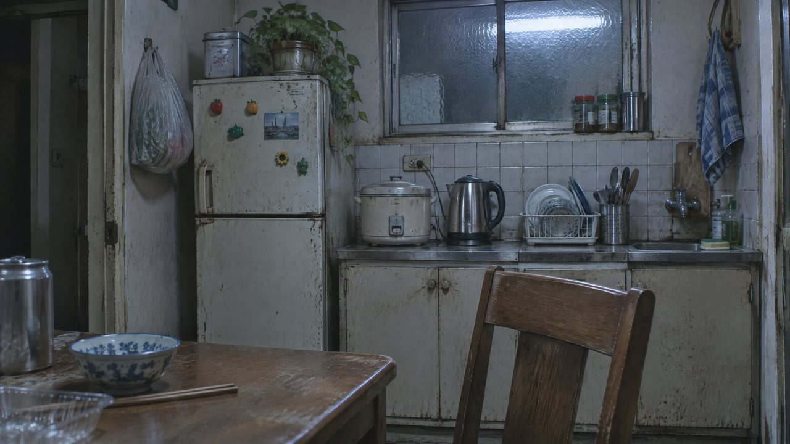
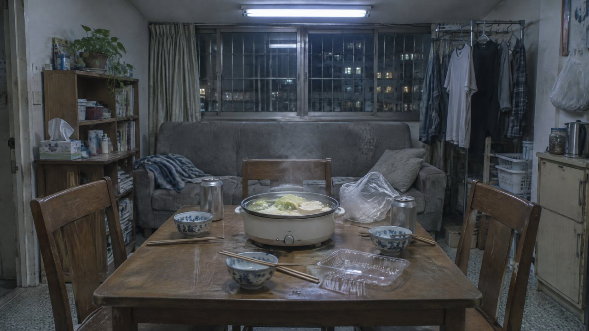
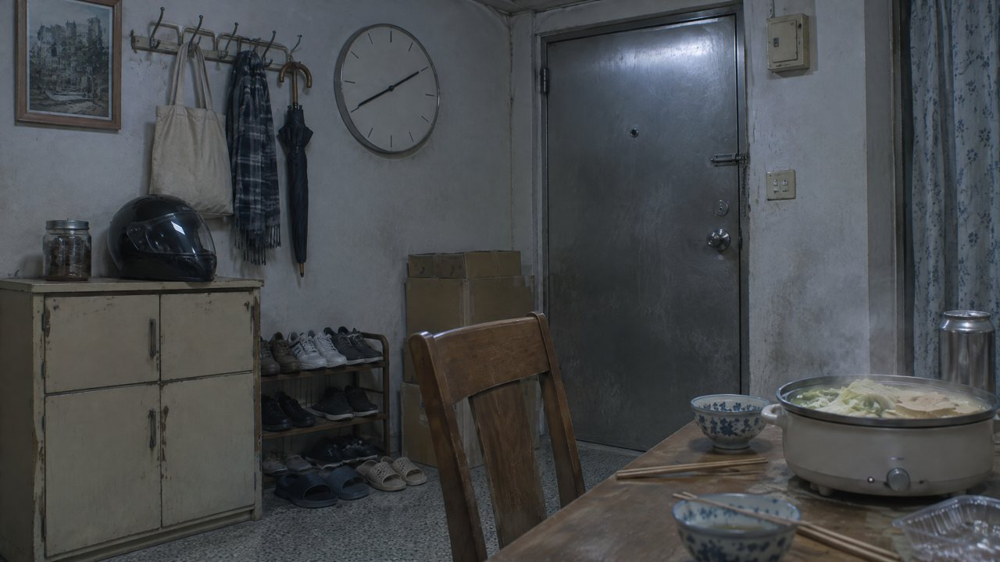
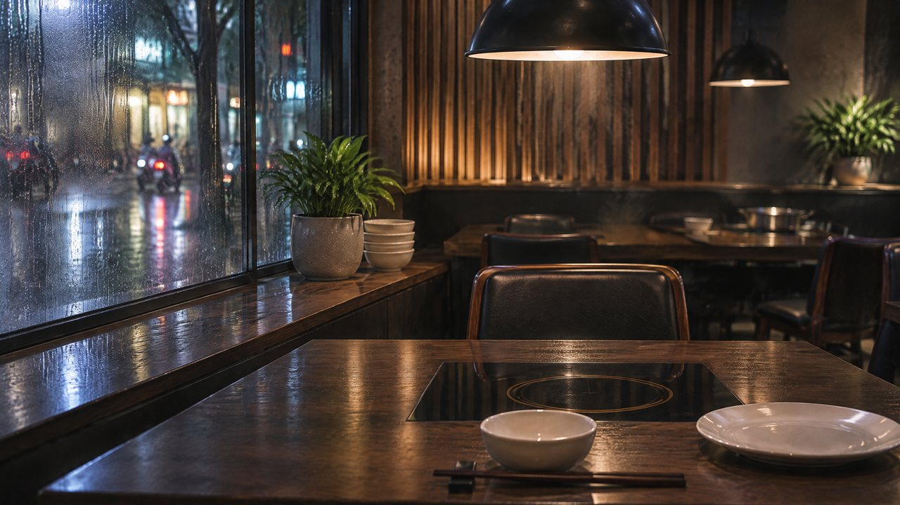
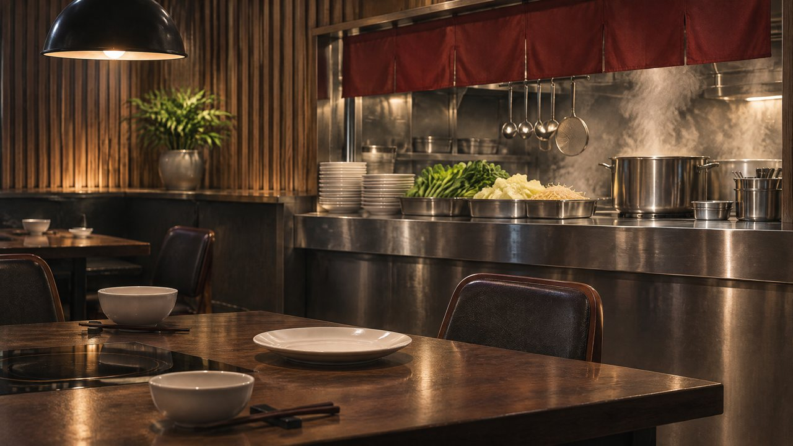
白模與站位圖
Blender 裡三個人偶坐在固定座位，阿翔綠、小琪黃、阿凱灰。每個鏡位先渲一張站位圖，再當生圖的構圖參考，人物位置和裁切就不會亂跑
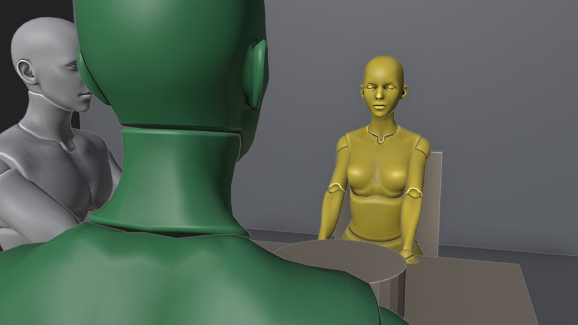
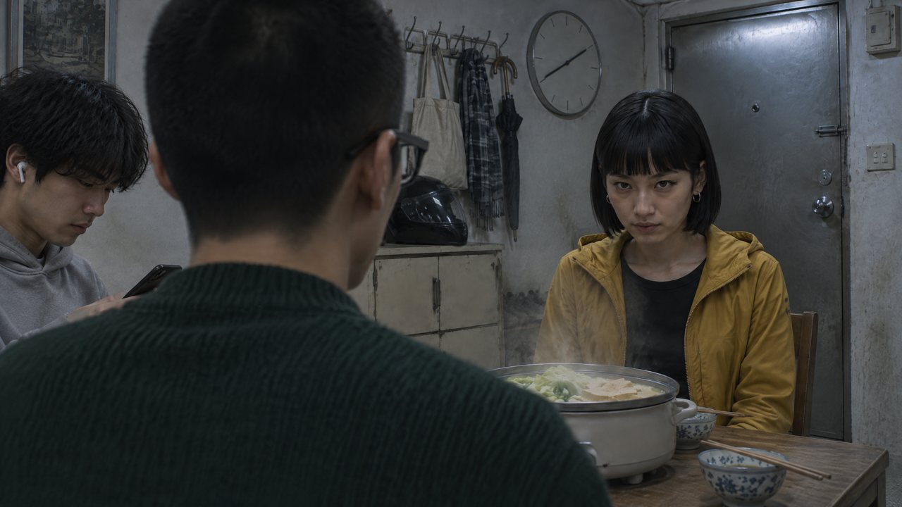
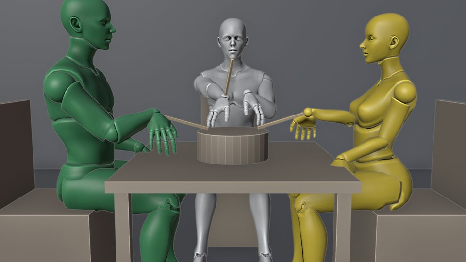
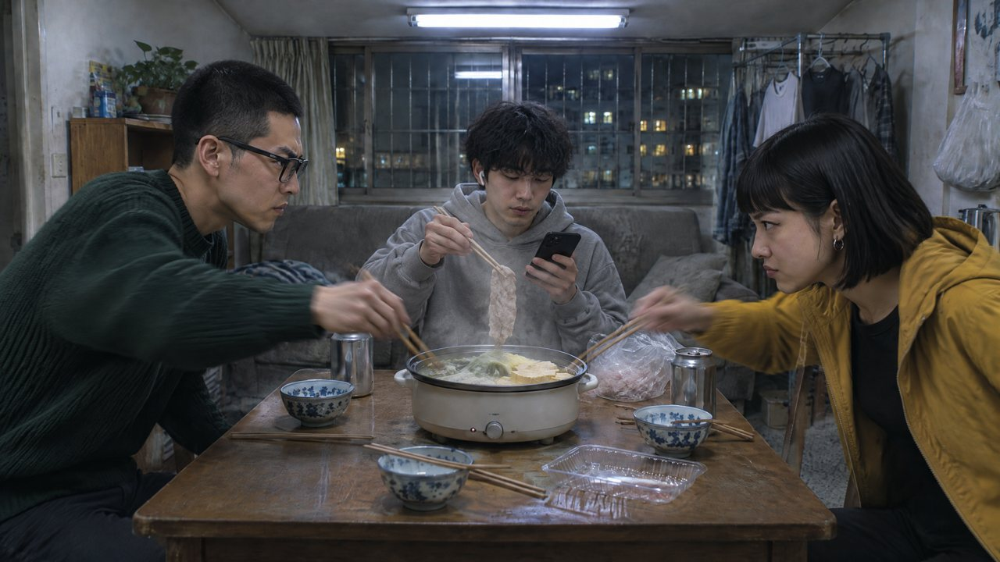
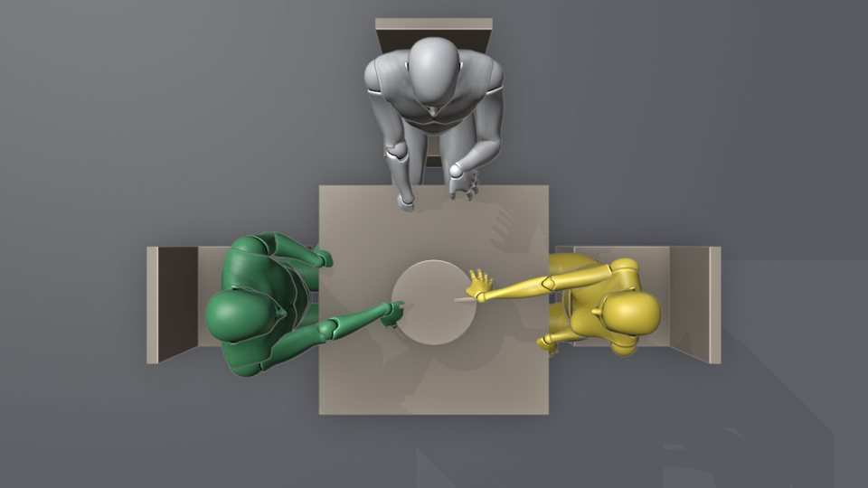
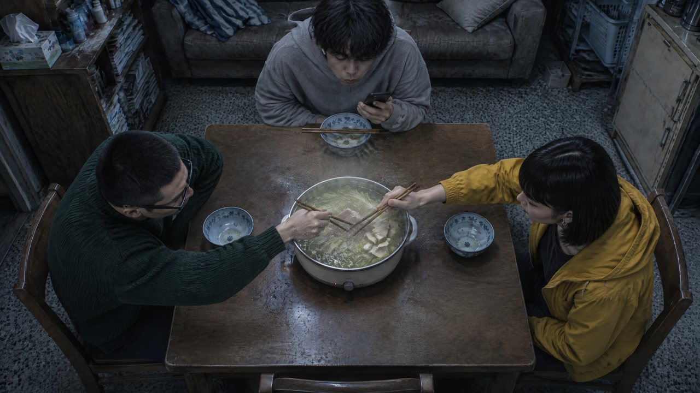
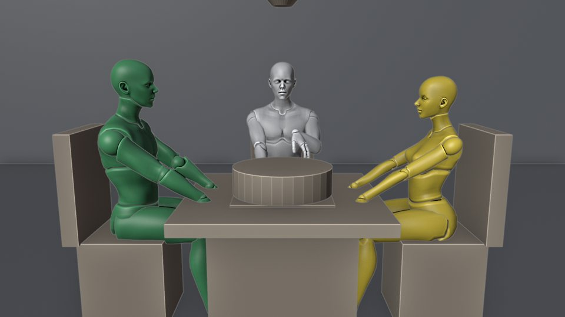
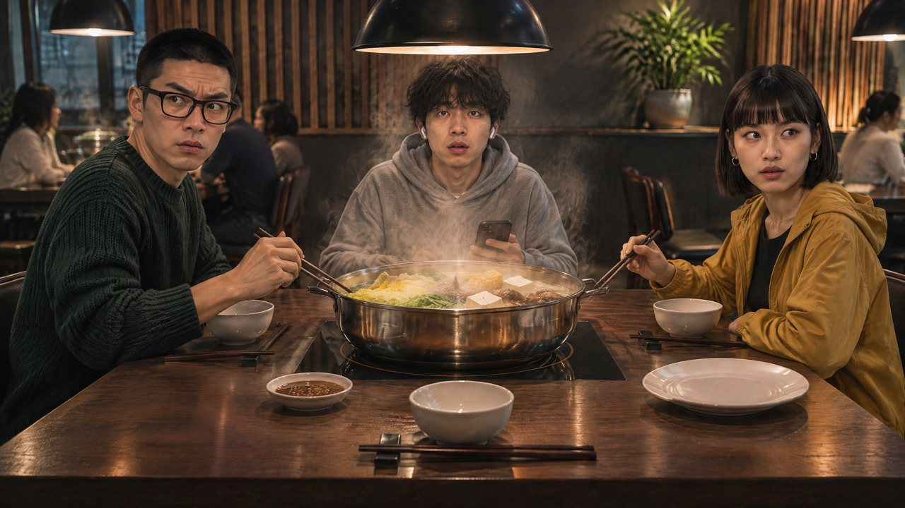
聲音
口白用 Gemini TTS，心聲加回音；配樂和音效用本機 Stable Audio 3。老闆的「免搶」用台羅拼音讓 TTS 念成台語
分鏡
照影片中的順序排列，往下捲動橫向瀏覽
動態分鏡
分鏡圖加白模換場加口白配樂，先給內部確認節奏，確認後才用 Higgsfield 生成影片
製作狀態
- 分鏡與素材
- Firefly GPT Image 2.6，約 1,420 點
- 口白・配樂・白模
- OpenRouter Gemini TTS、本機 Stable Audio 3、Blender 5.2
- 影片生成
- Higgsfield Seedance 2.5，尚未送出，送前先報價
- 期限
- Higgsfield 點數 11-29 歸零，11-28 前生成完